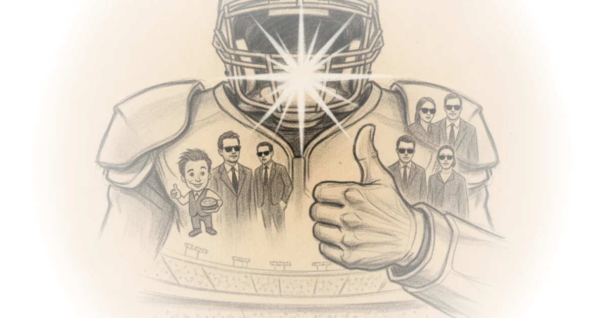

Ray Carpenter doesn't just count snaps; he exposes how the NFL's most physical position group is quietly being re-engineered into a specialized, situational weapon. While most analysis fixates on star power, Carpenter's data-driven deep dive reveals that the league's best interior defenses often rely on deep, rotating platoons rather than a single dominant force, challenging the conventional wisdom that elite run-stopping requires a heavy, static lineup.
The Myth of the Iron Man
Carpenter opens by reframing the defensive tackle (DT) not as a static anchor, but as a "cameo specialist" whose value lies in specific situational deployment. He writes, "Defensive tackles alter entire offensive game plans. If Vita Vea is on the field, you probably shouldn't run the ball up the middle." This observation sets the stage for a granular look at how teams actually utilize these players. Instead of assuming a standard rotation, Carpenter uses SQL queries on nflfastR play-by-play data to uncover distinct philosophical divides among franchises.

The core of his argument is that roster construction is often messy and inconsistent. He notes, "Positions are fickle. The Venn diagram is sometimes circular," pointing out that teams like the Eagles list every interior lineman as a DT, while others like the Buccaneers split them into DTs, NTs, and DLs. By cross-referencing historical depth charts, Carpenter attempts to normalize this chaos. The result is a startling revelation: the deepest rotations do not correlate with injuries. In fact, the Arizona Cardinals boasted the deepest rotation in the league, expanding their group even after rookie Walter Nolen returned from an injury. This suggests that depth is a strategic choice, not a reactive measure.
"We may be grossly underestimating just how serious Vita Vea's trade request from the Buccaneers is."
This insight is particularly sharp when applied to elite units. Carpenter points out that traditionally strong defenses like the Seahawks, Eagles, and Buccaneers actually ranked near the bottom in rotation depth, while teams like the Broncos and Rams achieved stellar run defense by rotating significantly more players. Critics might argue that snap counts don't capture the intensity or quality of play, but Carpenter's data suggests that the "one-and-done" star model is less prevalent in successful modern defenses than the public assumes. The evidence implies that teams are increasingly treating the defensive line as a chessboard of specialized pieces rather than a collection of iron men.
The Cameo Kings and Situational Specialists
Moving beyond general rotation, Carpenter isolates the true "cameo kings"—players who appear almost exclusively in specific game scenarios. He identifies a clear split in usage: some players are deployed only in heavy personnel packages, while others are reserved for passing downs. "Logan Lee and McKinnley Jackson featured only on heavy personnel packages (snaps where the defense anticipated 12, 13, or 22 personnel from the offense) for the Steelers and Bengals," Carpenter writes. Conversely, Ty Robinson of the Eagles was utilized almost entirely on passing downs to counter spread offenses.
This granular breakdown challenges the notion of a "starting five" in the NFL. Carpenter observes, "But look at that DT5+ bar creep up towards the top, those teams distributed more snaps beyond their top four tackles and perhaps never had a solid idea of the best way to rotate their interior defensive linemen." This suggests a league-wide experimentation phase where coaches are still searching for the optimal balance between depth and specialization. The data indicates that while some teams have found a rhythm, others are still casting a wide net, hoping to find the right combination of size and speed for every down.
"Data is an incomplete representation of reality, and players do things that aren't captured."
Carpenter wisely tempers his findings with this quote from Eric Eager and Richard Erickson, acknowledging the limitations of his own metrics. He argues that while on/off stats can confirm hunches—such as the Chiefs' offense becoming more conservative after Patrick Mahomes' injury—they should not be the sole arbiter of player value. This humility strengthens his credibility, especially given the recent backlash against his analytics website. He notes that while some critics call these stats "useless," the data successfully mirrors what players and coaches already know intuitively.
The Record That Isn't Untouchable
In a fascinating sidebar, Carpenter shifts from defensive linemen to the often-overlooked realm of kicking, using Adam Vinatieri's consecutive field goal record as a case study in statistical longevity. He writes, "I went into it thinking Vinatieri's 44 consecutive field goal streak was a DiMaggio's 56-game hit game hit streak level of impossibility to replicate, and ended it seeing that it's much more reachable than I assumed." By analyzing active kickers, he finds that several, including Cairo Santos and Brett Maher, have already matched or exceeded that number under different conditions.
This section serves as a reminder that historical records are often more fragile than they appear. Carpenter points out that the "K-ball" era (where the ball is softer and harder to kick) makes modern comparisons tricky, yet the numbers suggest the record is within reach. He highlights the irony of the situation: "Whoever eclipses him will always have the K-ball asterisk next to their record though." This adds a layer of nuance to how we view athletic achievement, suggesting that context matters as much as the raw number.
"All stats are biased, all data is incomplete. That's why I keep you in the loop with my process whenever I do one of these data analyses."
Carpenter's defense of his methodology is a direct response to the online toxicity his work has attracted. He argues that transparency is the antidote to skepticism: "If I show you my process, then I have nothing to hide." This stance is crucial in an era where data is often weaponized to support pre-existing biases. By inviting readers to scrutinize his SQL queries and data sources, he transforms the act of analysis from a lecture into a collaborative investigation.
Bottom Line
Ray Carpenter's analysis succeeds by stripping away the glamour of star power to reveal the mechanical reality of NFL roster construction. His strongest argument is that the most effective defenses are not built on a single dominant player, but on a deep, rotating cast of situational specialists. The piece's biggest vulnerability lies in its reliance on official position classifications, which can be inconsistent across teams, but Carpenter's methodological transparency mitigates this risk. For the busy reader, the takeaway is clear: the next time you see a defensive tackle subbed out, it's not a sign of weakness, but a calculated move in a complex, data-driven game of chess.